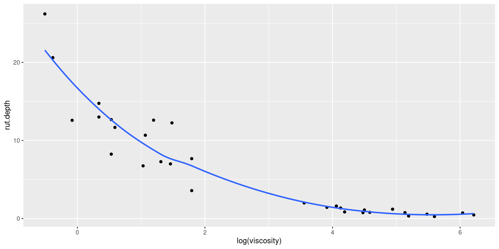
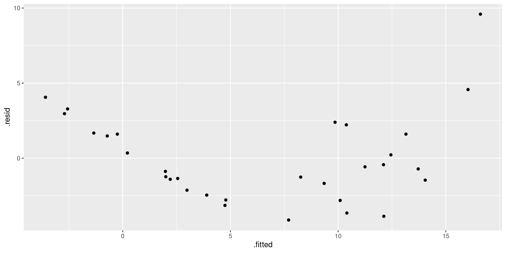

Case study: asphalt
The asphalt data
- 31 asphalt pavements prepared under different conditions. How does quality of pavement depend on these?
- Variables:
pct.a.surfPercentage of asphalt in surface layerpct.a.basePercentage of asphalt in base layerfinesPercentage of fines in surface layervoidsPercentage of voids in surface layerrut.depthChange in rut depth per million vehicle passesviscosityViscosity of asphaltrun2 data collection periods: 1 for run 1, 0 for run 2.
rut.depthresponse. Depends on other variables, how?
Packages for this section
Make sure to load MASS before tidyverse (for annoying technical reasons).
Getting set up
- Quantitative variables with one response: multiple regression.
- Some issues here that don’t come up in “simple” regression; handle as we go. (STAB27/STAC67 ideas.)
The data (some)
Plotting response “rut depth” against everything else
Same idea as for plotting separate predictions on one plot:
“collect all the x-variables together into one column called x, with another column xname saying which x they were, then plot these x’s against rut.depth, a separate facet for each x-variable.”
I saved this graph to plot later (on the next page).
The plot

Interpreting the plots
- One plot of rut depth against each of the six other variables.
- Get rough idea of what’s going on.
- Trends mostly weak.
viscosityhas strong but non-linear trend.runhas effect but variability bigger when run is 1.- Weak but downward trend for
voids. - Non-linearity of
rut.depth-viscosityrelationship should concern us.
Log of viscosity: more nearly linear?
- Take this back to asphalt engineer: suggests log of
viscosity:
(plot overleaf)
Rut depth against log-viscosity
Regression output: summary(rut.1) or:
Comments
- R-squared 81%, not so bad.
- P-value in
glanceasserts that something helping to predict rut.depth. - Table of coefficients says
log(viscosity). - But confused by clearly non-significant variables: remove those to get clearer picture of what is helpful.
- Before we do anything, look at residual plots:
- of residuals against fitted values (as usual)
- of residuals against each explanatory.
- Problem fixes:
- with (a): fix response variable;
- with some plots in (b): fix those explanatory variables.
Plot fitted values against residuals
Plotting residuals against \(x\) variables
- Problem here is that residuals are in the fitted model, and the observed \(x\)-values are in the original data frame
asphalt. - Package broom contains a function
augmentthat combines these two together so that they can later be plotted: start with a model first, and then augment with a data frame:
What does rut.1a contain?
[1] "pct.a.surf" "pct.a.base" "fines" "voids" "rut.depth"
[6] "viscosity" "run" ".fitted" ".resid" ".hat"
[11] ".sigma" ".cooksd" ".std.resid"- all the stuff in original data frame, plus:
- quantities from regression (starting with a dot)
Plotting residuals against \(x\)-variables
The plot

Comments
- There is serious curve in plot of residuals vs. fitted values. Suggests a transformation of \(y\).
- The residuals-vs-\(x\)’s plots don’t show any serious trends. Worst probably that potential curve against log-viscosity.
- Also, large positive residual, 10, that shows up on all plots. Perhaps transformation of \(y\) will help with this too.
- If residual-fitted plot OK, but some residual-\(x\) plots not, try transforming those \(x\)’s, eg. by adding \(x^2\) to help with curve.
Which transformation?
- Best way: consult with person who brought you the data.
- Can’t do that here!
- No idea what transformation would be good.
- Let data choose: “Box-Cox transformation”.
- Scale is that of “ladder of powers”: power transformation, but 0 is log.
Running Box-Cox
From package MASS:

Comments on Box-Cox plot
- \(\lambda\) represents power to transform \(y\) with.
- Best single choice of transformation parameter \(\lambda\) is peak of curve, close to 0.
- Vertical dotted lines give CI for \(\lambda\), about (−0.05, 0.2).
- \(\lambda = 0\) means “log”.
- Narrowness of confidence interval mean that these not supported by data:
- No transformation (\(\lambda = 1\))
- Square root (\(\lambda = 0.5\))
- Reciprocal (\(\lambda = −1\)).
Relationships with explanatories
- As before: plot response (now
log(rut.depth)) against other explanatory variables, all in one shot:
The new plots

Modelling with transformed response
- These trends look pretty straight, especially with
log.viscosity. - Values of
log.rut.depthfor eachrunhave same spread. - Other trends weak, but are straight if they exist.
- Start modelling from the beginning again.
- Model
log.rut.depthin terms of everything else, see what can be removed:
- use
tidyfrombroomto display just the coefficients.
Output
Taking out everything non-significant
- Try: remove everything but pct.a.surf and log.viscosity:
- Check that removing all those variables wasn’t too much:
- \(H_0\) : two models equally good; \(H_a\) : bigger model better.
- Null not rejected here; small model as good as the big one, so prefer simpler smaller model
rut.3.
Find the largest P-value by eye:
- Largest P-value is 0.78 for
pct.a.base, not significant. - So remove this first, re-fit and re-assess.
- Or, as over.
Get the computer to find the largest P-value for you
- Output from
tidyis itself a data frame, thus:
- Largest P-value at the bottom.
Take out pct.a.base
- Copy and paste the
lmcode and remove what you’re removing:
rut.4 <- lm(log(rut.depth) ~ pct.a.surf + fines + voids +
log(viscosity) + run, data = asphalt)
tidy(rut.4) %>% arrange(p.value)finesis next to go, P-value 0.32.
“Update”
Another way to do the same thing:
- Again,
finesis the one to go. (Output identical as it should be.)
Take out fines:
Can’t take out intercept, so run, with P-value 0.36, goes next.
Take out run:
Again, can’t take out intercept, so largest P-value is for voids, 0.044. But this is significant, so we shouldn’t remove voids.
Comments
- Here we stop:
pct.a.surf,voidsandlog.viscositywould all make fit significantly worse if removed. So they stay. - Different final result from taking things out one at a time (top), than by taking out 4 at once (bottom):
(Intercept) pct.a.surf voids log(viscosity)
-1.0207945 0.5554686 0.2447934 -0.6464911 (Intercept) pct.a.surf log(viscosity)
0.9001389 0.3911481 -0.6185628 - Point: Can make difference which way we go.
Comments on variable selection
- Best way to decide which \(x\)’s belong: expert knowledge: which of them should be important.
- Best automatic method: what we did, “backward selection”.
- Do not learn about “stepwise regression”! eg. here
- R has function
stepthat does backward selection, like this:
Gets same answer as we did (by removing least significant x).
- Removing non-significant \(x\)’s may remove interesting ones whose P-values happened not to reach 0.05. Consider using less stringent cutoff like 0.20 or even bigger.
- Can also fit all possible regressions, as over (may need to do
install.packages("leaps")first).
All possible regressions (output over)
Uses package leaps:
The output
Comments
- Problem: even adding a worthless x increases R-squared. So try for line where R-squared stops increasing “too much”, eg. top line (just log.viscosity), first 3-variable line (backwards-elimination model). Hard to judge.
- One solution (STAC67): adjusted R-squared, where adding worthless variable makes it go down.
data.framerather thantibblebecause there are several columns inoutmat.
All possible regressions, adjusted R-squared
Revisiting the best model
- Best model was our rut.6:
Revisiting (2)
- Regression slopes say that rut depth increases as log-viscosity decreases,
pct.a.surfincreases andvoidsincreases. This more or less checks out with out scatterplots againstlog.viscosity. - We should check residual plots again, though previous scatterplots say it’s unlikely that there will be a problem:
Residuals against fitted values

Plotting residuals against x’s
- Do our trick again to put them all on one plot:
Residuals against the x’s

Comments
- None of the plots show any sort of pattern. The points all look random on each plot.
- On the plot of fitted values (and on the one of log.viscosity), the points seem to form a “left half” and a “right half” with a gap in the middle. This is not a concern.
- One of the pct.a.surf values is low outlier (4), shows up top left of that plot.
- Only two possible values of run; the points in each group look randomly scattered around 0, with equal spreads.
- Residuals seem to go above zero further than below, suggesting a mild non-normality, but not enough to be a problem.
Variable-selection strategies
- Expert knowledge.
- Backward elimination.
- All possible regressions.
- Taking a variety of models to experts and asking their opinion.
- Use a looser cutoff to eliminate variables in backward elimination (eg. only if P-value greater than 0.20).
- If goal is prediction, eliminating worthless variables less important.
- If goal is understanding, want to eliminate worthless variables where possible.
- Results of variable selection not always reproducible, so caution advised.
Comments and next steps